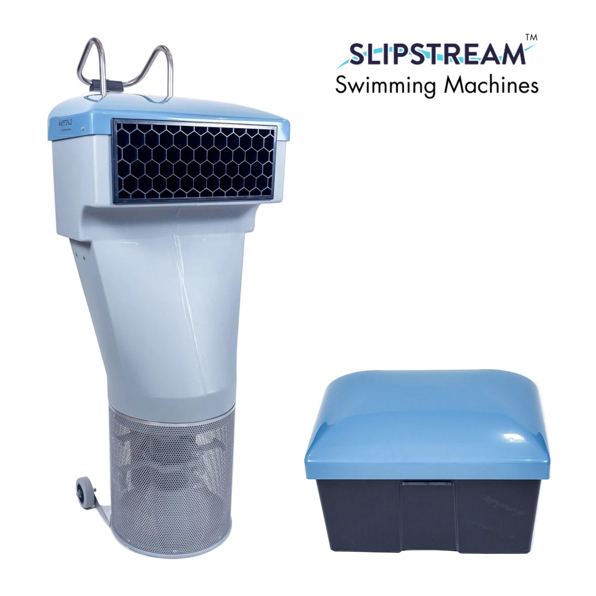

Triathletes
Improve body position, timing, breathing, pacing, and open-water confidence so the swim costs less energy and leaves more for the bike and run.
In-person swim coaching for triathletes and swimmers who want better mechanics, more feel for the water, stronger pacing, and confidence in racing. Sessions can come to your own pool, even small ones, with technology-supported feedback when it helps.
Most swimmers don’t need more random volume. They need better movement, clearer feedback, and a format that works with the pool they actually have.
Direct deck-side coaching on what’s actually slowing you down, not vague advice from a YouTube clip.
Improve how the stroke feels and how much speed you get from a given level of effort. Less waste, more carry-over.
Sessions adapt to your pool. With a Slipstream device, even a small backyard pool can support meaningful continuous-swim work.
Whether you’re new to structured swim work or an experienced swimmer fixing costly inefficiencies, the approach adapts.
Improve body position, timing, breathing, pacing, and open-water confidence so the swim costs less energy and leaves more for the bike and run.
Build cleaner fundamentals, better feel for the water, and habits that hold up under fatigue, without overcomplicating the process.
Learn sound movement patterns early. Don’t carry poor mechanics into higher-volume or higher-intensity training as you scale up.
Useful when fitness is improving but swim pace isn’t moving, or when easy swimming still feels too expensive.
Sessions are shaped around your level, goals, and the pool you have, not a one-size-fits-all template.
We meet at your pool. With a Slipstream device, even a small pool supports continuous-swim work, controlled effort, and technical drills that would otherwise need a long lane.
Targeted corrections that address a real problem, with cues simple enough to keep using after the session ends. Format shifts based on whether the priority is technique, pacing, or skill-building.
The aim is to carry change into steady swimming, faster work, open water, and race-specific demands, not isolate it in drills only.
Coaching can be focused around one clear problem, or built more broadly around overall efficiency, confidence, and skill development.
Body position, balance, rotation, breathing pattern, catch, timing, stroke rate, rhythm, and reducing wasted movement length-by-length.
Build awareness of pace, control effort across intensity, and hold cleaner mechanics when fatigue arrives. Feel-for-the-water work that translates to race day.
Open-water confidence, sighting, race starts, buoy turns, group swimming, and adapting technical work to what’s realistically possible in your pool.
Three ways to work together. All can be delivered in your own pool.
Focused in-person session built around one or two technical priorities. Direct feedback and a clear next step. Best for tune-ups, race prep, or first contact.
Race-day skills, not just pool work. Safety fundamentals plus the open-water competencies that actually decide swim splits, sighting, drafting, mass starts, navigation under stress.
For athletes who need repetition and enough contact time to make changes stick. The strongest option when using the same home-pool setup consistently.
For partners, small groups, or teams wanting guided technical work together. In smaller pools, athletes rotate through turns or focus on drills, foundational skills, and observation while others work.
The piece of equipment that makes home-pool coaching genuinely useful, even when the pool is smaller than a single lap.

Slipstream creates a wide, deep, even current at the head of the pool. You swim in place. We watch from multiple angles, run continuous-effort sets, and observe stroke under real fatigue, without needing a 25-yard lane.
Slipstream is also a Yousuli partner brand. See the partner program →
Want the curriculum first? The free Swim Foundations mini-course → walks through the 6-stage adult-learner pathway built around the Slipstream swim station. Drills, tools, common mistakes, and a practice plan, no signup required.
From my own observations and the heart-rate data I’ve gathered swimming against the device. Useful for planning a session before you turn it on, and for knowing which speeds are for warm-up, technique work, or hard efforts.
| Slipstream | Likely intensity | Pool pace (yd) | Pool pace (m) | Confidence |
|---|---|---|---|---|
| 7 | Moderate aerobic | 1:40–1:37 /100y | 1:50–1:47 /100m | low–moderate |
| 8 | Steady aerobic / upper aerobic | 1:37–1:33 /100y | 1:47–1:43 /100m | low–moderate |
| 9 | Hard aerobic / threshold-ish | 1:31–1:27 /100y | 1:40–1:36 /100m | low |
| 10 | Strong threshold to near top ramp effort | 1:28–1:23 /100y | 1:36–1:31 /100m | low |
Conversion used: 100 yd pace × 1.0936 ≈ 100 m pace. Reference points: 1:40 /100y ≈ 1:49.4 /100m · 1:37 /100y ≈ 1:46.1 /100m · 1:33 /100y ≈ 1:41.7 /100m · 1:28 /100y ≈ 1:36.2 /100m · 1:23 /100y ≈ 1:30.8 /100m.
One caution. The chart is a pace-equivalent conversion, not proof that the hydrodynamic load is truly identical in a pool vs. against the Slipstream current. Treat it as the best rough operational chart from the HR data I have so far, not a calibration standard. I’ll update the table as more data comes in.
Common questions before booking.
In your own pool, almost anywhere in greater Los Angeles. With a Slipstream device, even small backyard pools work. A dedicated Yousuli pool base is in planning for athletes without home-pool access.
No. Adult swimmers, developing athletes, and anyone who wants to swim better are all welcome. The approach adapts to where you are.
Not necessarily. Many athletes book a single technique session for a tune-up. The 4-session coaching block exists for those who want changes to actually stick.
Yes, that’s where Slipstream earns its place. For group sessions, athletes rotate through turns or alternate between active swim work and drill / observation work depending on the available space.
The dedicated Open Water Session covers safety fundamentals plus race-day skills (sighting, drafting, mass starts, buoy turns). Sessions run in an open-water venue when the calendar and weather align, or as race-simulation drills in your pool.
Yes, common combo. Swim Stroke Analysis from the Performance Lab gives you the diagnostic. On-site coaching turns the diagnosis into improved swimming.
Pick a single technique session for direct feedback, a coaching block to make changes stick, or shared coaching with your training partners. All formats work in your own pool.
Or browse all formats & pricing above.